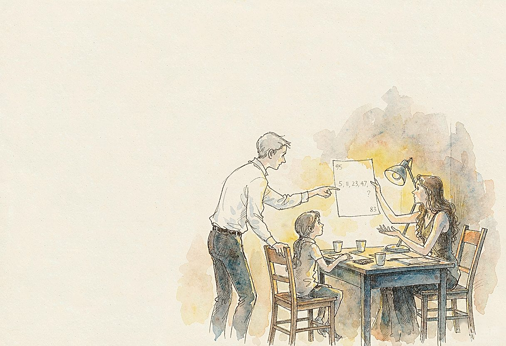

幸福，往往藏在生活细碎的瞬间。于我们一家而言，有一种独属于我们的幸福，叫作“一起解题”。
我和老伴都是老三届，母校留给我们最珍贵的馈赠，便是乐于钻研、探究求索的习惯。
命运颇有缘分。上山下乡的大潮，把我们推到了同一个农场。不久，又先后调入农场子弟学校任教。起先，我在十队小学，她在场部学校。那个年代没有手机、微信，两地相隔，想要探讨一道习题十分不易。恰好有一名家在十队、每天往返到场部读初中的学生，我们便请他充当义务通讯员，演算的草稿、解题的思路，都托这个孩子来回捎带传递。一张薄薄的纸，沾着些许泥巴和汗渍，却承载着两个人对知识的热爱。
后来我也调进场部学校，坐到了同一间办公室，终于可以面对面切磋研讨。我们常常比拼谁解题更快、方法更好。有一回遇到一道很难找辅助线的几何题，我很快找到一条捷径解法，心中暗自得意。老伴却并不认同我的思路，另辟蹊径画出另一组辅助线。两个人各持己见，在备课桌上反复推演，争辩的声音越来越大，隔壁办公室的同事还悄悄探头张望，误以为我们起了争执。待到完整演算完毕才恍然大悟，两条路径全部行得通，都是正确解法。一番热烈辩论过后，我们相视一笑，内心反而多了一份对彼此思维的欣赏。单调艰苦的农场岁月，就在一道道题目的推演之中变得充实丰盈。
1977年，恢复高考的消息传来，我们满怀激情投入备考。农场经常停电，夜里就在简陋的小桌上点起四支蜡烛，埋头演算数理化习题。有时候走在野外路上，脑中忽然闪过一道几何题的思路，便就地蹲下，捡起树枝在泥地上画图推演。通过短短一个多月分秒必争的冲刺，我们双双成为恢复高考后的第一届大学生。
毕业后，我们都走上教师岗位。妻子从中学，到师范，后来成为大学教师；我当过中学教师，后来调入教育学院担任教研员。即便日常工作繁忙，遇到学术问题互相探讨，始终是我们二人的乐趣。平等交流、接纳不同思路，也慢慢沉淀为我们家无形的家风。
女儿小学毕业那年，恰逢控江中学七年一贯制实验班开始招生，全区总共才42个名额。选拔考试对思维能力要求很高，不只是简单的知识记忆。
那段日子，晚饭过后，家里书桌之上总是摊满奥数习题，我们一家三口围坐桌前，各自拿一张草稿纸独立演算，遇到卡壳便互相启发、反复推敲。
印象很深的一次，女儿遇上一道难度不小的奥数题，冥思苦想许久没有头绪，心里烦躁，一把将草稿纸揉成团扔在桌面上。我们没有直接报出答案，也没有催促她赶快做出来，只是告诉她不妨先放一放，换个角度慢慢思索。于是我们三人分开，各自安静琢磨。过了半个多小时，女儿忽然灵光一闪，她兴奋地把皱巴巴的纸团重新展开，就在这张揉过的纸上继续书写推导，一步步把难题解开。
我们始终觉得，学习重要的不是追求答案、结果，而是培养愿意反复钻研、独立思考的韧性。经过一家人齐心协力的打磨，1992年，女儿顺利考入控江中学七年一贯制实验班。
岁月流转，我们相继退休，“一起解题”依旧是家里雷打不动的保留节目。每每覓得一道趣味数学题，我们就拿出纸笔认真演算。讨论起来常常各持己见，你来我往互不相让，有时争得面红耳赤，争辩过后内心却格外爽快，思维碰撞带来的快乐无可替代。
印象最深的，是这样一道数列题：5，11，23，47，请推算下一个数字。
老伴有着多年数学教学经验，循着差值翻倍的常规教学思路，很快推算得出答案95。女儿却另辟蹊径，细心观察发现数列当中的数字和质数排布存在关联，循着另一套完全不同的逻辑，推导出答案83。同一个题目，得出两个截然不同的结果，一时间谁也说服不了谁。后来多方查证之后才知晓，两套推导逻辑全部成立，两个答案都是正确。这件事令我们深有感触：思考本就不存在唯一标准答案，交流探讨、彼此包容启发，远比一个最终结果更加珍贵。
从烛光下并肩备战高考，到陪伴女儿刷题成长，再到如今鬓发染霜。几十年岁月匆匆流转，围桌算题已经成为我们家的传统。思辨探讨的习惯，一直留存在家中。
旁人看来，埋首演算一道道数学题，或许有些枯燥。可对我们，争论不是隔阂，思辨带来默契。一道道习题，见证了夫妻相知相伴，也陪伴着孩子成长成才，悄悄塑造家的风气：尊重不一样的想法，乐于倾听不同声音，在探讨当中互相理解，共同进步。
幸福有千千万万种模样，并非全部来自丰厚的物质。于我们家，灯下共同推演、彼此启发的这一段段时光，这份精神层面的相知与陪伴，就是朴素真切、实实在在的幸福。